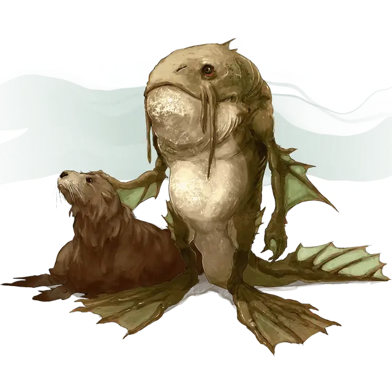

Локата
Locathah

Обыкновенные водные создания, которых избегают как сухопутные путешественники, так и подводные жители. Локаты живут в тесных общинах, разбросанных по всему миру в морях, озерах и водоёмах. Локаты обладают чешуйчатой охристой кожей с зеленоватым и желтоватым оттенками. Бугристая, ржавого цвета кожа покрывает их грудь и животы, а пятнистые волны зелёного, коричневого и оранжевого цветов покрывают их плавники, похожие на стареющие водоросли.
От Локат исходит сильный рыбный запах, когда они находятся над водой, что, в дополнение к их уже нервирующему виду, отталкивает большинство сухопутных обитателей. Вопреки своему угрожающему виду, они идут на всё, чтобы подружиться с живущими на поверхности, предлагая безопасные проходы через воды, указывая на опасные рифы и намекая на затонувшие сокровища в обмен на прочную керамику и металлические инструменты и оружие, а также клубни, которые считаются деликатесом.
Среда обитания и общество
Локаты не любят сражений и убегают, когда их разоружают или превосходят числом. Локаты высоко ценят общину, никогда не оставляют друзей и идут на всё, чтобы вернуть своих товарищей.
Среди себеподобных и дружественных к ним рас локаты единственные социальные существа, которые ведут очень похожий на человека, хотя и простой, образ жизни. Локаты работают по камню, кораллам и костям, чтобы произвести грубые орудия, которые они используют.
Они пытаются обменивать свои знания о местных водных территориях на керамические и металлические изделия наземных жителей.
Локаты питаются в основном подводными растениями и моллюсками, дополняя их случайной рыбой. Им также нравится есть корнеплоды, когда им удаётся их заполучить.
Каждое племя возглавляет матриарх, которая также служит главным источником яиц. Каждый взрослый член племени несёт ответственность за воспитание одного молодого локата как своего собственного. Они часто приручают мурен, и воины могут использовать гигантских угрей в качестве лошадей.
Особенности локаты
Ваш персонаж-локата обладает следующими особенностями.
Увеличение характеристик. Ваше значение Силы увеличивается на 2, а значение Ловкости на 1.
Скорость. Ваша базовая скорость ходьбы составляет 30 футов, вы также можете плавать со скоростью 30 футов.
Возраст. Локаты достигают зрелости к 10 годам, но, как известно, живут до 80 лет.
Мировоззрение. Любое.
Размер. Локаты имеют рост от 5 до 6 футов (от 1,5 метра до 1,8 метра) и весят в среднем около 150 фунтов (68 килограмм). Ваш размер — Средний.
Природный доспех. У вас жёсткая чешуйчатая кожа. Когда вы не носите доспех, ваш КД равен 12 + модификатор Ловкости.
Вы можете использовать свой природный доспех для определения КД, если доспехи на вас будут давать вам меньший КД.
Преимущества от использования щита действуют как обычно, если вы используете свой природный доспех.
Наблюдательный и спортивный. Вы владеете навыками Восприятие и Атлетика.
Воля Левиафана. У вас есть преимущество в спасбросках от состояний испуганный, отравленный, очарованный, ошеломленный, парализованный и от усыпления.
Частичная земноводность. Вы можете дышать воздухом и водой, но вам нужно погружаться в воду по крайней мере один раз в 4 часа, чтобы не задохнуться.
Язык. Вы можете говорить, читать и писать на Акване и Общем.